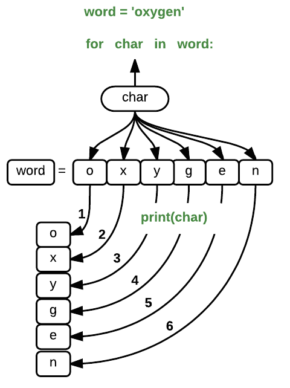

word = 'lead'
print(word[0])
print(word[1])
print(word[2])
print(word[3])l
e
a
dfor loop and the while looprange()for loops repeat code for each element in a collectionwhile loops repeat code until a condition changesTo do that, we’ll have to teach the computer how to repeat things.
An example task that we might want to repeat is printing each character in a word on a line of its own.
We can access a character in a string using its index. For example, we can get the first character of the word 'lead', by using word[0]. One way to print each character is to use four print statements:
word = 'lead'
print(word[0])
print(word[1])
print(word[2])
print(word[3])l
e
a
dThis is a bad approach for two reasons:
word = 'tin'
print(word[0])
print(word[1])
print(word[2])
print(word[3])---------------------------------------------------------------------------
IndexError Traceback (most recent call last)
<ipython-input-3-7974b6cdaf14> in <module>()
3 print(word[1])
4 print(word[2])
----> 5 print(word[3])
IndexError: string index out of rangeInstead we can use a loop - a construct that moves through a collection of data taking one bit at a time. Here’s a loop in action
word = 'lead'
for char in word:
print(char)l
e
a
dThis is shorter, certainly shorter than something that prints every character in a hundred-letter string and more robust as well. Note the indentation rules apply in the for loop.
Also, see how the same code works if we change the length of the word
word = 'oxygen'
for char in word:
print(char)o
x
y
g
e
nThe improved version uses a for loop to repeat code in this case print(), once for each thing in a sequence. The general form of a loop is:
Using the oxygen example above, the loop might look like this:

where each character (char) in the variable word is looped through and printed one character after another. The numbers in the diagram denote which loop cycle the character was printed in (1 being the first loop, and 6 being the final loop).
We can call the loop variable anything we like, but there must be a colon at the end of the line starting the loop, and we must indent anything we want to run inside the loop. Unlike many other languages, there is no command to signify the end of the loop body (e.g. end for); what is indented after the for statement belongs to the loop.
In the example above, the loop variable was given the name char as a mnemonic; it is short for ‘character’. We can choose any name we want for variables. We might just as easily have chosen the name banana for the loop variable, as long as we use the same name when we invoke the variable inside
word = 'oxygen'
for banana in word:
print(banana)o
x
y
g
e
nIt is a good idea to choose variable names that are meaningful, otherwise it would be more difficult to understand what the loop is doing.
Here’s another loop that repeatedly updates a variable:
length = 0
for vowel in 'aeiou':
length = length + 1
print('There are', length, 'vowels')There are 5 vowelsIt’s worth tracing the execution of this little program step by step.Since there are five characters in 'aeiou', the statement on line 3 will be executed five times. The first time around,length is zero (the value assigned to it on line 1) and vowel is 'a'.
The statement adds 1 to the old value of length, producing 1, and updates length to refer to that new value.
The next time around,vowel is 'e' and length is 1, so length is updated to be 2. After three more updates, length is 5; since there is nothing left in 'aeiou' for Python to process, the loop finishes and the print statement on line 4 tells us our final answer.
Note that a loop variable is just a variable that’s being used to record progress in a loop. It still exists after the loop is over, and we can re-use variables that were previously defined as loop variables:
letter = 'z'
for letter in 'abc':
print(letter)
print('after the loop, letter is', letter)a
b
c
after the loop, letter is cThis means your loop variable should ideally not be something you intend to use elsewhere.
Note also that finding the length of a string is such a common operation that Python actually has a built-in function to do it called len:
print(len('aeiou'))5Looping over a Python list is very common. The syntax is identical.
numbers_and_letters = [1,2, 'three', 'IV', 5.0 ]
for item in numbers_and_letters:
print(item)1
2
three
IV
5.0What if we don’t want to do every item in a collection, or if we want to do something a set number of times? We can create a collection that has the things we need.
Python has a built-in function called range() that creates a sequence of numbers. range() can accept 1, 2, or 3 parameters.
range creates an array of that length, starting at zero and incrementing by 1. For example, range(3) produces the numbers 0, 1, 2.range starts at the first and ends just before the second, incrementing by one. For example, range(2, 5) produces 2, 3, 4.range is given 3 parameters, it starts at the first one, ends just before the second one, and goes up in steps of the third one. For example range(3, 10, 2) produces 3, 5, 7, 9.You can loop over the keys in the dictionary in the same way as for the list, explicitly accessing the value using the key.
d = {'x': 1, 'y': 2, 'z': 3}
for key in d:
print(key, 'has value', d[key])x has value 1
y has value 2
z has value 3Note that as dicts are intrinsically disordered, unlike lists the order they will be accessed in this way is arbitrary. If you care about order you can make a list of the keys using the keys() method and loop over that instead. Here we make a list of keys and sort it, then loop over the sorted key. Note the difference in the result to that above.
d = {'x': 1, 'y': 2, 'z': 3}
frozen_keys = sorted(d.keys())
for key in frozen_keys:
print(key, 'has value', d[key])x has value 1
y has value 2
z has value 3Python can also be made to give you the key - value pairs if you want them, so you don’t need to explicitly get the value each time. For this we use the .items() method and two loop variables. The first loop variable gets the key, the second the value.
d = {'x': 1, 'y': 2, 'z': 3}
for key, value in d.items():
print(key, 'has value', value)x has value 1
y has value 2
z has value 3A different sort of loop is the while loop. This loop repeats while something is in some state - usually the True state.
i = 1
while i < 6:
print(i)
i += 11
2
3
4
5The while loop is somewhat rare in Python, but does get used from time to time.
Using range, write a loop to print the first 3 positive integers.
Exponentiation is built into Python, \(3 ^ 2\) would be 3 ** 2. Write a loop that calculates the same result as 5 ** 3 using multiplication (and without exponentiation).
print(5 ** 3)125Knowing that two strings can be concatenated using the + operator, write a loop that takes a string and produces a new string with the characters in reverse order, so 'Newton' becomes 'notweN'.
The built-in function enumerate() takes a sequence (e.g. a list) and generates a new sequence of the same length. Each element of the new sequence is a pair composed of the index (0, 1, 2,…) and the value from the original sequence:
fruits = ['apple', 'banana', 'grapes', 'pear']
for position, name in enumerate(fruits):
print("The ", position, "fruit is ", name)The 0 fruit is apple
The 1 fruit is banana
The 2 fruit is grapes
The 3 fruit is pearThe function shuffle() in the random package rearranges a list in place (meaning it changes the original object, so you don’t have to use a fresh variable name. Use the enumerate() and random.shuffle() to mix up the list below and work out where the digit 100 appears in the list.
big_numbers = list(range(1000) )